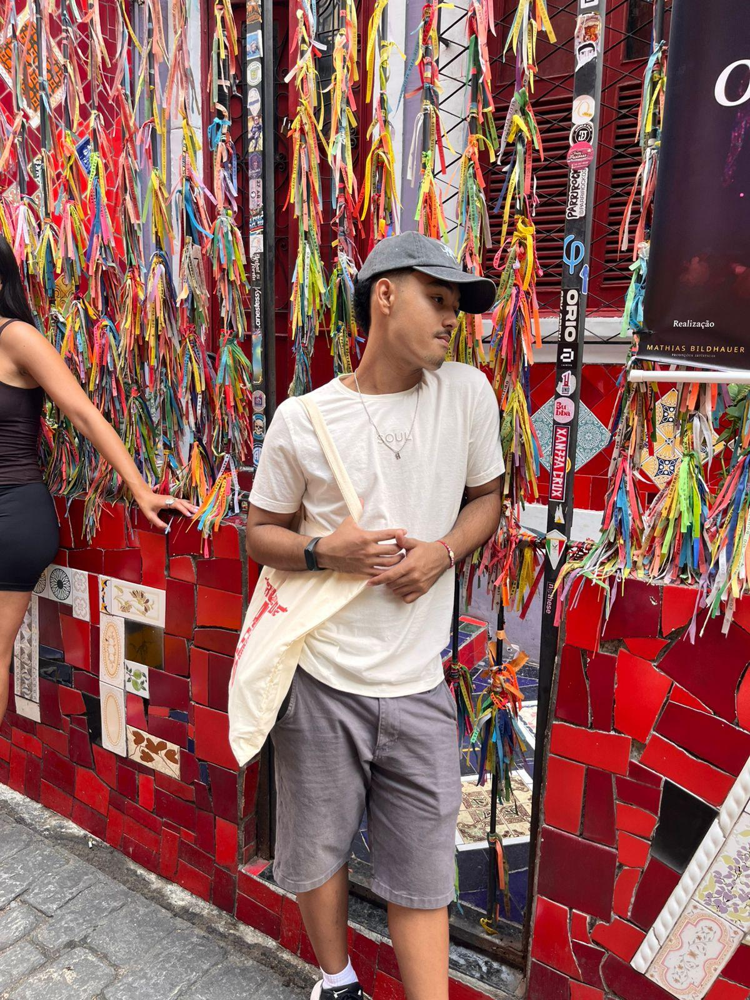

Sobre Mim
Sou um entusiasta de tecnologia e programação. Tenho experiência em desenvolvimento web e estou sempre buscando aprender novas habilidades. Adoro trabalhar em projetos criativos e desafiadores.
Formação
- Curso/Ensino Médio - Análise e Desenvolvimento de Sistemas
- Cursando Tecnólogo em Análise e Desenvolvimento de Sistemas
- Inglês Intermediário
- Presidência/Tesouraria - Interact Club
SESI-SENAI
SENAI-BAURU
Jet School
Rotary Club
Expectativas para o futuro
Como entusiasta de tecnologia e atual graduando em Engenharia de Software, minhas expectativas para o futuro estão centradas na evolução contínua dentro do ecossistema de desenvolvimento web. Busco consolidar minha carreira como um desenvolvedor Full-Stack capaz de integrar soluções técnicas robustas com as metodologias de Design Thinking, garantindo que a tecnologia sempre sirva ao propósito de melhorar a experiência e o bem-estar do usuário final.
No âmbito profissional, pretendo aplicar meus conhecimentos em arquitetura de software e bancos de dados — como os projetos de SQL que já venho desenvolvendo — para construir aplicações que resolvam problemas reais, especialmente no setor de gestão e produtividade. Tenho como meta imediata a conclusão do meu TCC, focado em gestão de custos e precificação, utilizando-o como um trampolim para o mercado de tecnologia aplicada à indústria.